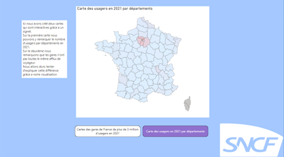
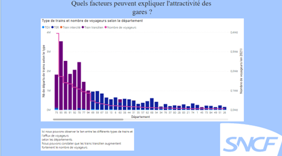
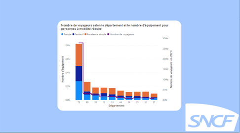

Dataviz
Le concours Dataviz consistait à produire une représentation graphique sous l’outil de notre choix, répondant à une problématique définie à partir d’un jeu de données. Le concours était en lien avec la SCNF, la base de données fournie était remplie de données quantitatives classées selon les gares de France telles que le nombre de voyageurs, le nombre de trajets, le prix au m² dans les villes des gares ou encore la population totale.
Nous avons décidé de questionner ce qui faisait l’attractivité d’une gare, pour cela une autre base de données est venue rejoindre les informations que nous avions déjà afin de pouvoir répondre à notre problématique : une base de données sur les équipements mis en place dans les gares pour les personnes à mobilité réduite. Pour mesurer l’attractivité d’une gare nous avions décidé de regarder si la gare était bien équipée, les types de trains passant dans la gare et le nombre de passagers entrant dans la gare pour voyager.
La réalisation du projet s’est faite avec l’outil Power BI, nous avions la journée entière pour nous organiser sur la problématique, les graphiques que nous voulions afficher, et enfin les commentaires que nous pouvions faire sur le sujet.
Compétences acquises :
- Utilisation de Power BI
- Interprétation et création d’une problématique
- Choix des graphiques et représentation visuelle de données
Illustrations



Voici des extraits de notre travail pour le concours Dataviz